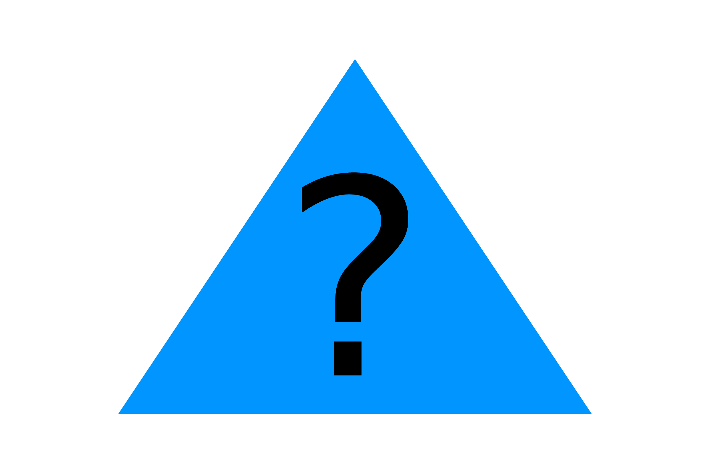

Вам може бути цікаво, де всі інші приклади перевірки зіткнення з трикутниками. Відповідь: ми їх вже зробили! Найменша кількість сторін у багатокутнику дорівнює трьом, тому весь код, яким ми використовували для багатокутника також працюватиме і для трикутників.
Однак, оскільки наш багатокутний код призначений для роботи з p5.Vector, вам потрібно буде визначити свої трикутники за допомогою трьох об’єктів p5.Vector або змінити саму функцію зіткнення, щоб вона опрацьовувала набір координат вершин зручним для вас способом.
Далі: Завдання 5